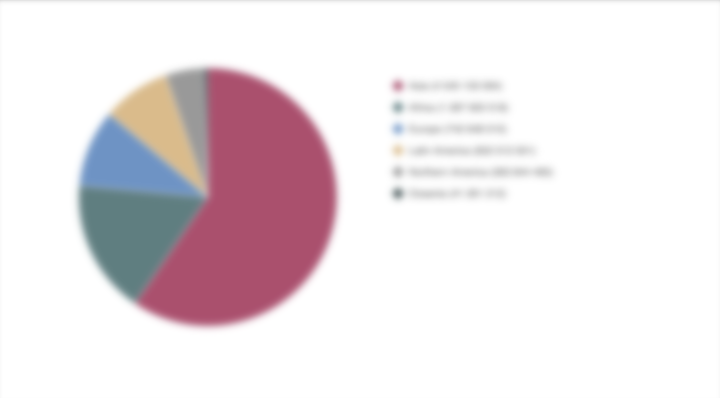
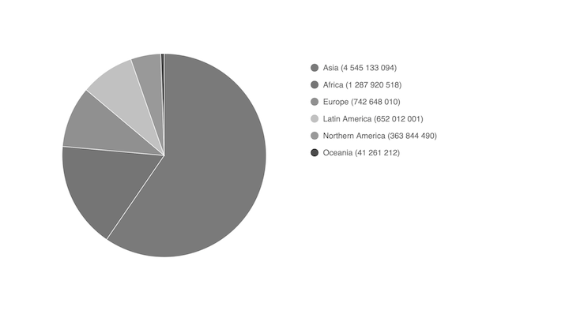
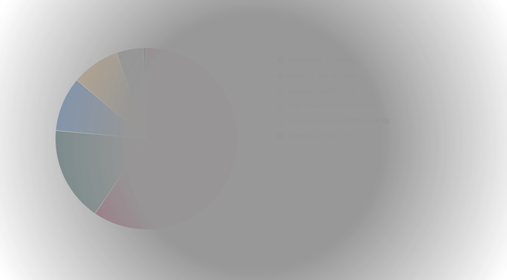
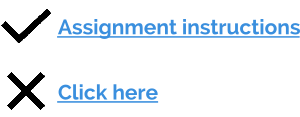

Accessibility
Why this is important and why we should pay attention to it
 © John Carey
© John Carey
Agenda
- What?
- Why?
- How?
- When?
Who does need it?
People who...
- can't use their arms
- can't hear well
- can't see well
Stress cases:
- Old age
- Chronic medical conditions
- Being outside with a heavy sun glare
- Needing to use a site with different devices
- Temporary disabilities

217M

307M

187M
36M
Links and buttons
- Use links to open new page or navigate on the current page
- Use buttons to make actions on page
- Don't use div and span with onClick handlers
- Don't use empty links
<a href="/somewhere" class="icon facebook"></a>
- Write descriptive links

How to make better
- Always use semantic HTML
- Add labels to form elements
- Use contrasting colors
- Provide text for not-text-content
- Show where your :focus is
- Understandable without colors
- Caption video and audio
- Keep pinch zoom alive
Use valid language
-
<html lang="en">
-
<html lang="da">
-
<html lang="se">
Use aria attributes
<a href="/facebook.com" class="icon facebook"
area-label="facebook"></a>
<i class="icon-menu" aria-hidden></i>
W3C ARIA in HTML
Testing accessibility
- Zoom to 200%
- Check keyboard navigation
- Run Google Chrome accessibility audit
- Use screen reader
- Deactivate CSS